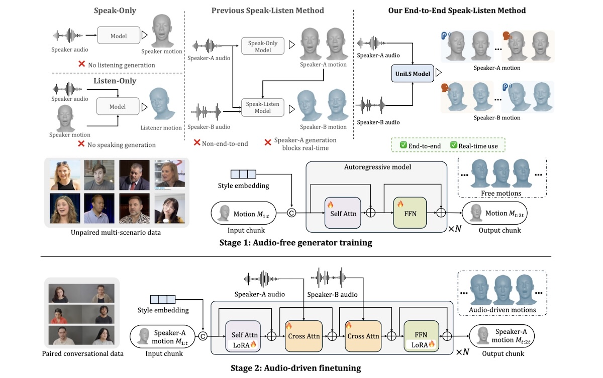

UniLS: End-to-End Audio-Driven Avatars for Unified Listening and Speaking
Paper /
Project Website /
Code

UniLS generates realistic, dual-track audio-driven expressions for both speakers and listeners.